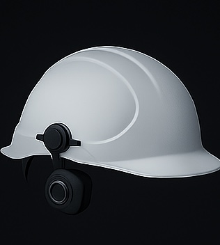
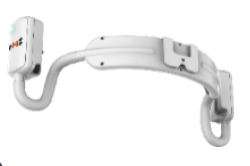
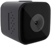

CoreGuard Helmet는 산업 현장 근로자의 안전을 위한 첨단 기술이 집약된 스마트 헬멧입니다.
생체 인식, 영상 기록, 음성 통신, 실시간 알림 기능이 통합되어
사고를 예방하고 현장을 보다 효율적으로 관리할 수 있도록 돕습니다.

🪖 스마트 안전모 기능
🧠 뇌파 센서 탑재
헬멧에 내장된 뇌파 센서는 착용자의 생체 신호를 측정합니다.
피로도, 스트레스, 집중도 등을 실시간으로 감지하여,
위험 상황이나 사고 발생 가능성을 사전에 파악할 수 있습니다.

피로도, 스트레스, 집중도 등을 실시간으로 감지하여,
위험 상황이나 사고 발생 가능성을 사전에 파악할 수 있습니다.
📷 소형 탈부착 카메라
탈부착이 가능한 고해상도 카메라는 작업자의 시점에서 현장을 기록합니다.
위험 순간을 블랙박스처럼 저장하거나, 실시간 중계 기능도 가능하여
관리자에게 현장 상황을 실시간으로 전달할 수 있습니다.

위험 순간을 블랙박스처럼 저장하거나, 실시간 중계 기능도 가능하여
관리자에게 현장 상황을 실시간으로 전달할 수 있습니다.
🎧 골전도 블루투스 이어폰
골전도 이어폰은 귀를 막지 않으면서도 선명한 음성 전달이 가능합니다.
관리자와의 양방향 소통은 물론, 자동 알림 방송도 수신할 수 있어
소음이 있는 환경에서도 원활한 커뮤니케이션을 지원합니다.
관리자와의 양방향 소통은 물론, 자동 알림 방송도 수신할 수 있어
소음이 있는 환경에서도 원활한 커뮤니케이션을 지원합니다.

⚠️ 긴급상황 자동 알림
뇌파 이상, 낙상 감지, 강한 충격 등의 신호가 감지되면
시스템은 자동으로 관리자에게 긴급 알림을 전송합니다.
사고 발생 시 신속한 대응이 가능해 인명 피해를 최소화할 수 있습니다.
시스템은 자동으로 관리자에게 긴급 알림을 전송합니다.
사고 발생 시 신속한 대응이 가능해 인명 피해를 최소화할 수 있습니다.
📊 작업기록 자동화
카메라 영상과 생체정보가 자동으로 기록되고 분석됩니다.
작업자의 활동 이력은 데이터로 축적되어, 교육 자료나 리스크 분석에 활용됩니다.
현장 관리를 데이터 기반으로 혁신할 수 있습니다.
작업자의 활동 이력은 데이터로 축적되어, 교육 자료나 리스크 분석에 활용됩니다.
현장 관리를 데이터 기반으로 혁신할 수 있습니다.